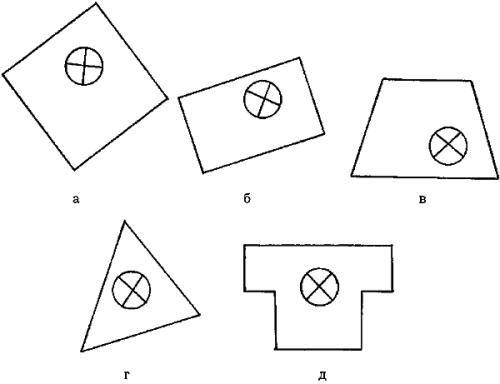
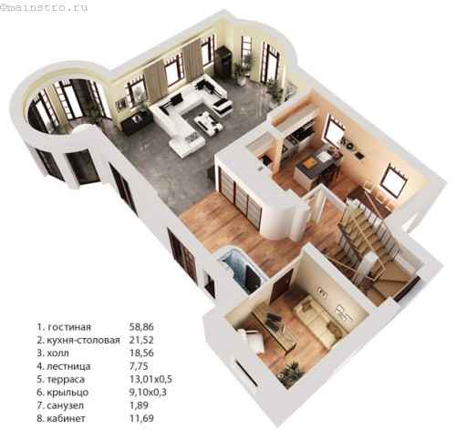
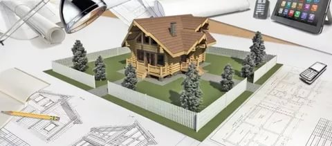
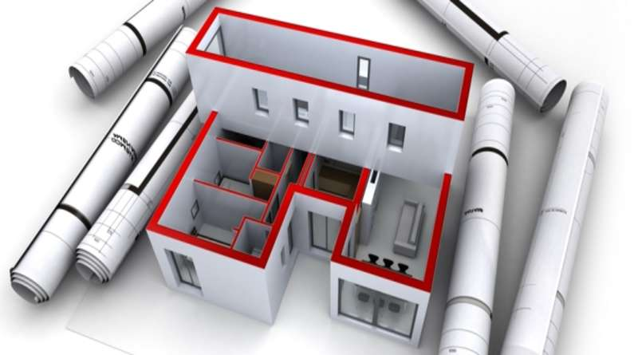
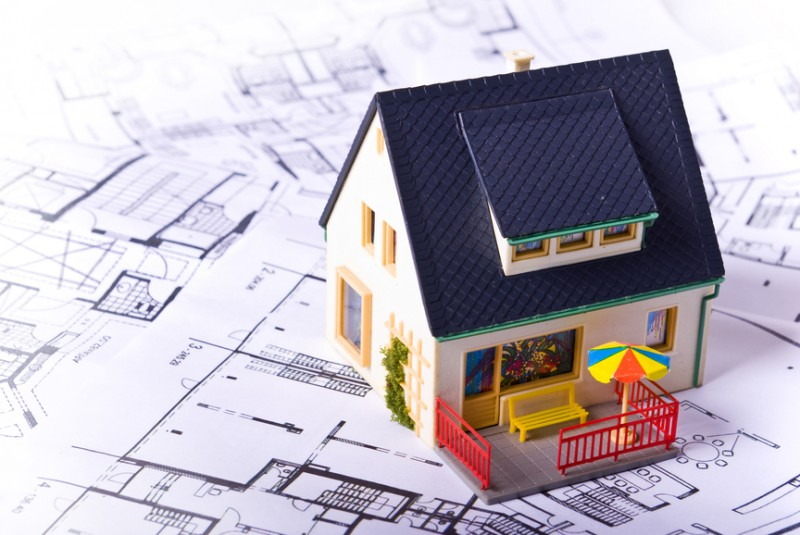

Итак, с чего же начать будущему владельцу частного дома? Конечно-же с покупки земельного учатка.
Выбор участка – дело не менее важное, чем выбор проекта дома, и к нему нужно отнестись серьезно, чтобы потом не возникли неожиданные трудности при строительстве или неприятные сюрпризы при эксплуатации дома.
Для жителей города земельный участок — это, прежде всего, место, где планируется построить будущее родовое гнездо. Желательно, чтобы его окружал радующий глаз пейзаж: лес, заливные луга, река или озеро. Все остальное отступает на второй план и совершенно напрасно. Нужно уделить максимум внимания:
доступности коммуникаций: электричества, газа, канализации, водопровода и центральной системы отопления;
Даже наличие рядом с понравившимся участком желанного водоема может оказаться большим осложнением, так как строительство в водоохранных зонах находится под запретом.
Не менее важным фактором при выборе земельного участка являются геодезические особенности местности.
Геодезические особенности территории:
Рельеф.
Небольшие искажения устраняются сравнительно легко (подразумеваются технологии, но не затраты) — выравниванием грунта, правильным выбором фундамента, поднятием цоколя. Но если уклон от 100 см и более, стоимость строительства 1 м² основания дома резко возрастает.
Характеристики грунта.
От этого во многом зависит выбор типа (значит, и стоимости) фундамента.
Расположение грунтовых вод.
Следовательно, во сколько обойдется обустройство скважины (колодца) и сможет ли источник полностью обеспечить все потребности собственника участка.
Линейные параметры земельного надела.
Дело не только в его размерах, но и в конфигурации. Что необходимо учесть при выборе участка?
Соответствие территории задуманному проекту дома. Вряд ли кто захочет резко менять свои планы по строительству, если есть возможность выбора участка среди многих. Количество соток — это не показатель. Каковы длина и ширина? Получится ли поставить на участке жилой дом, да еще и с пристройкой, например, в виде гаража?

Сколько остается свободного пространства, и что это за сегменты. К сожалению, мало кто задумывается над тем, что можно дополнительно построить на территории. Как правило, это гараж, сарай, летняя кухня, инженерные сооружения (септик, скважина или колодец). Возможно, крольчатник или курятник. Вот на этом и стоит сделать акцент. Дело не только в том, поместится ли все на оставшейся площади. Для некоторых объектов существуют определенные строительные нормы и санитарные правила. В первую очередь, это касается минимального отстояния от заборов, жилых строений на смежных территориях, дорог, водоемов. Может получиться так, что в цифрах свободного места для дополнительного строительства в избытке, а по факту желаемое возвести (по закону) нельзя
Как приобрести земельный участок?
Земельный участок под строительство дома можно приобрести как у частных лиц, так и у государства. В первом случае такое приобретение производится в соответствии с гражданским законодательством. Во втором - по определенным правилам через аукцион, либо без него.
Земельные участки для строительства и обслуживания одноквартирных, блокированных жилых домов предоставляются в следующих размерах:
в городах — от 5 до 15 соток включительно;
в населенных пунктах, расположенных в пригородных зонах города Минска, областных центров и городов областного подчинения, - от 10 до 15 соток включительно;
в сельских населенных пунктах, поселках городского типа — от 15 до 25 соток включительно.
Как купить земельный участок для строительства дома через аукцион?
Гражданин может приобрести земельный участок в частную собственность для строительства и обслуживания одноквартирного, блокированного жилого дома предложив наибольшую цену за него на аукционе. Исключение составляют случаи, когда такие земельные участки предоставляются без аукциона.
Где можно узнать о предстоящих аукционах?
О проведении аукциона исполком извещает население не позднее чем за 30 дней до его проведения через печатные средства массовой информации. Кроме этого о предстоящих аукционах можно узнать через Единую информационную базу неиспользуемого государственного имущества на сайте Государственного комитета по имуществу Республики Беларусь. Также указанная информация может размещаться на официальных сайтах исполкомов.
Регистрации в качестве участника аукциона
Для участия в аукционе гражданин в установленный в извещении срок должен подать в исполком (комиссию по организации и проведению аукциона) следующие документы:
заявление об участии в аукционе с указанием кадастровых нономеров земельных участков, которые он желает приобрести в частную собственност��;
документ, подтверждающий внесение суммы задатка (задатков) на текущий (расчетный) счет, указанный в извещении, с отметкой банка;
копию паспорта или другого документа, содержащего его идентификационные сведения, без нотариального засвидетельствования.
При подаче документов на участие в аукционе граждане Республики Беларусь предъявляют паспорт гражданина Республики Беларусь.
После получения необходимых документов, гражданину выдается билет участника аукциона с указанием номера, под которым он будут участвовать в аукционе. Перед началом аукциона необходимо будет зарегистрироваться и обменять данный билет на аукционный номер, который возвращаются в комиссию или организацию после окончания аукциона.
Если документы на аукцион гражданином поданы не вовремя, а также поданы не в полном объеме или не внесен задаток, то такой гражданин к участию в аукционе не допускается.
Участник аукциона в любое время до начала аукциона может письменно отозвать свое заявление об участии в нем. Неявка участника аукциона на аукцион также приравнивается к такому письменному отзыву. При этом участнику аукциона в течение 5 рабочих дней со дня проведения аукциона возвращается внесенный им задаток.
>Аукцион проводится при наличии двух или более участников аукциона.
Право на приобретение земельного участка под строительство дома без аукциона
Исключительным правом приобретения земедльного участка без аукциона обладают лица, состоящие на учете нуждающихся в улучшении жилищных условий в соответствии с действующим законодательством.
Где можно посмотреть список свободных земельных участков?
Для того, что бы узнать о наличии свободных (незанятых) земельных участков под строительство, необходимо обратиться в исполком. Перечни таких земельных участков обновляются ежемесячно и размещаются на информационных стендах исполкома, а также на их официальных сайтах в Интернете.
Государственная регистрация земельного участка.
Право на земельный участок возникает у гражданина с момента государственной регистрации этого права в организации по государственной регистрации и удостоверяется свидетельством (удостоверением) о государственной регистрации.
Документы для государственной регистрации создания земельного участка и возникновения прав на него:
заявление;
паспорт или иной документ, удостоверяющий личность;
документ (квитанция) об оплате за регистрацию;
Гражданин обязан обратиться за государственной регистрацией приобретенного им земельного участка, прав, ограничений (обременений) прав на него:
в течение двух месяцев после принятия решения о предоставлении земельного участка;
в течение двух месяцев после подписания договора аренды земельного участка, но не позднее трех месяцев со дня принятия решения о предоставлении земельного участка — в случае, если земельный участок передан гражданину в аренду и за право его заключения плата не вносилась.
Если гражданин приобрел земельный участок через аукцион, то срок обращения за государственной регистрацией определяется в решении исполкома о предоставлении этогo участка.
В случае, если гражданин не обратится в установленные сроки за государственной регистрацией, то решение исполкома о предоставлении земельного участка будет считаться утратившим силу.
При наличии уважительной причины срок выполнения требования об обращении за госрегистрацией, может быть продлен решением исполкома по заявлению гражданина, поданного до истечения этого срока, но не раньше чем за два месяца до его окончания.
Освоение земельного участка
Гражданин в течение одного года со дня получения свидетельства (удостоверения) о государственной регистрации создания земельного участка и возникновения права на него обязан приступить к занятию данного участка в соответствии с целью и условиями его предоставления (начать строительство или иное освоение земельного участка).
Если гражданин приобрел земельный участок через аукцион, то срок, в течение которого он обязан приступить к освоению этого земельного участка, определяется в решении исполкома о его предоставлении.
В решении о предоставлении земельного участка могут быть указаны и другие требования по отводу земельного участка, которые гражданин обязан выполнить.
При наличии уважительной причины сроки выполнения требований по отводу земельного участка могут быть продлены решением исполкома по заявлению гражданина, поданного до окончания этих сроков, но не позже чем за два месяца до их истечения.
Если гражданин в установленный срок не выполняет хотя бы одного из условий отвода земельного участка, то исполком не позднее одного месяца со дня окончания этого срока направляет гражданину предписание о необходимости в не более чем месячный срок выполнить такие требования по отводу земельного участка. Если гражданин не выполнит указанное предписание, то исполком не позднее десяти дней:
принимает решение о прекращении прав на земельный участок и об его изъятии у гражданина – в случае, если земельный участок был передан гражданину в пожизненное наследуемое владение или временное пользование;
подает в суд заявление о прекращении права частной собственности на земельный участок – в случае, если земельный участок был передан гражданину в частную собственность;
принимает решение о расторжении договора аренды земельного участка – в случае, если земельный участок передан гражданину в аренду и если право расторжения договора аренды в одностороннем порядке предусмотрено этим договором;
подает в суд заявление о расторжении договора аренды земельного участка – в случае, если земельный участок передан гражданину в аренду и если право расторжения договора аренды в одностороннем порядке не предусмотрено этим договором.
ПРИОБРЕТЕНИЕ ЗЕМЕЛЬНОГО УЧАСТКА У ФИЗИЧЕСКОГО ЛИЦА
Приобретение земельного участка как недвижимой вещи в собственность начинается с заключения договора купли-продажи между продавцом и покупателем. По договору одна сторона (продавец) обязуется передать в собственность товар (земельный участок) другой стороне (покупателю), которая, в свою очередь, обязуется принять товар и уплатить за него определенную денежную сумму.
Примерный перечень документов для государственной регистрации перехода права собственности на земельный участок (договор купли-продажи заключен, условия согласованы, передаточный акт подписан, оплата произошла):
Правоустанавливающий документ;
Договор купли-продажи.
Передаточный акт.
Кадастровый паспорт земельного участка.
Доверенность на представителя.
Документ, удостоверяющий личность заявителя.
Заявление о государственной регистрации.
Уставные документы продавца-юрлица.
Согласие руководящего органа продавца-юрлица об отчуждении имущества.
Обязательным документом, сопровождающим договор купли-продажи земли, является передаточный акт. Он подтверждает осуществление обязательств сторон по передаче и приемке имущества. Акт должен быть подписан после подписания договора, но перед осуществлением госрегистрации перехода права собственности.
Проект будущего дома.
Следущим важным этапом является выбор проекта дома.




Как гласит поговорка, любое великое дело начинается с великого замысла. Особенно такое великое дело, как строительство загородного дома. Ну а олицетворением этого замысла является проект. Обзавестись проектом своего будущего собственного дома можно тремя способами:
обратиться к профессиональному архитектору. Это позволит получить уникальный с точки зрения внешнего вида фасад, грамотно спроектированные коммуникации и удобную для конкретной семьи планировку помещений. Естественно, стоимость такого проекта будет очень высока;
обратиться в архитектурное бюро для покупки готового варианта. В этом случае потребитель приобретает некий типовой продукт, стоимость которого значительно ниже стоимости индивидуального проекта на заказ, а качество в большинстве случаев не хуже. Но есть один нюанс – найти среди типовых проектов тот, который идеально подойдет конкретной семье, практически невозможно. Любой типовой проект, скорее всего, придется дорабатывать и корректировать;
самостоятельно разработать проект загородного дома. Он наиболее экономичен с точки зрения финансовых затрат, однако весьма непрост с технической точки зрения. Ни один специалист не скажет, что эта задача проста, но, справившись с ней, можно недорого получить абсолютно уникальный и адаптированный под потребности конкретной семьи дом.
С ЧЕГО ЖЕ НАЧАТЬ ВЫБОР ПРОЕКТА ДОМА?
Прежде всего, с четкого понимания того, что нам нужно. Заранее продумайте желаемую площадь, расположение комнат, количество этажей, высоту потолков и т. д. Это поможет вам при просмотре каталогов объективно оценивать удобство каждого проекта, а не поддаваться на уговоры продавцов. Бывает, что застройщику очень понравилась картинка, поэтому он соглашается купить проект, не учитывая удобство (или неудобство) планировки. Это в корне неправильно. Когда при постройке вы захотите что-нибудь изменить, это может обойтись в копейку.
ЧАСТЫЕ ОШИБКИ В ПРОЕКТАХ.
Когда строительство подходит к концу, застройщик может вдруг обнаружить, что например, спальню можно было бы ��делать поменьше, тогда как в гостиной ощущается недостаток квадратных метров;
Электрическая разводка зачастую проектируется «для вида» – показать, что она есть. Это не значит, что она продумана в зависимости от назначения помещения;
Бывает так, что проемы для дверей и окон не соответствуют стандартам;
Часто в проектах не продумана отопительная система.
ВЫБОР ПРОЕКТА ДОМА: КАК НЕ ДОПУСТИТЬ ОШИБОК?
Перед покупкой проекта выясните у архитектора вашего района, какие документы нужны для того, чтобы пройти согласование. Это поможет уберечься от недобросовестных продавцов, которые могут продать проект без нужных документов;
Потребуйте у фирмы лицензию на продажу проектов; Обсудите с семьей будущий проект;
Заранее обдумайте, из какого материала будет строиться дом;
По возможности, постарайтесь увидеть уже построенный дом по выбранному вами проекту;
Проследите, чтобы при внесении изменений в проект, учитывались коммуникации, расположение дорог и соседних домов, хозпостроек и т. д. После покупки проекта и внесения в него изменений, специалисты фирмы разрабатывают генплан.
ВАЖНЫЕ МЕЛОЧИ
Даже если земля принадлежит вам, строительство на ней требует разрешения местных инстанций;
По нормам, расстояние от забора до стены дома не должно быть меньше метра;
3,5 метра – необходимая ширина подъезда к дому;>br>
Чем меньше в доме нефункциональных помещений, например, холлов, тем ниже себестоимость квадратного метра;
От рельефа на участке также зависит стоимость дома – если земля ровная, дом потребует меньше трудозатрат и материалов;
Стоимость здания зависит и от формы дома – чем проще, тем дешевле; Теплоизоляция дома снизит расходы на отопление;
Рассчитывайте на затраты большие, чем прописано в договоре.
Приобретя участок, оформив всю необходимую документацию и и выбрав проект дома, следует приступить к последнему, но не менее важной части —
планированию участка
или, как еще называют данный этап подготовительных работ — зонированию. О данном этапе более подробно вы ознакомитесь, посмотрев привденный ниже видеоролик.